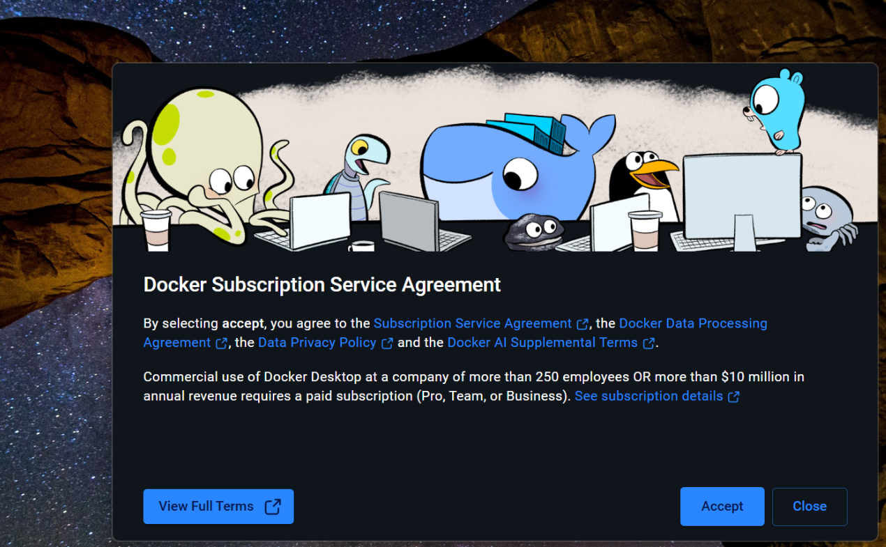
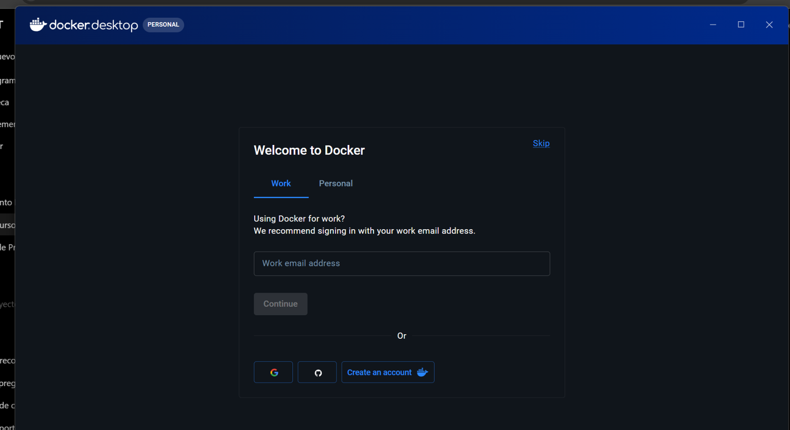
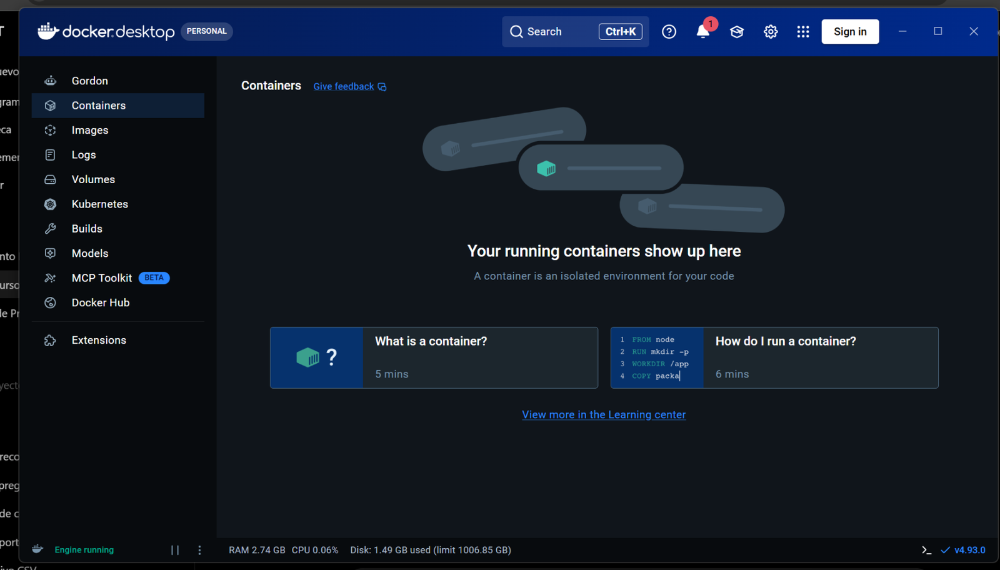
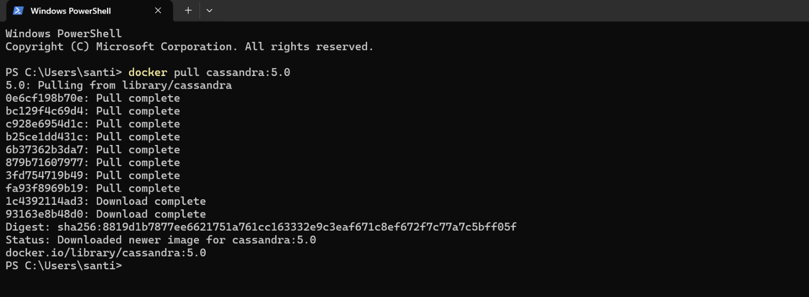
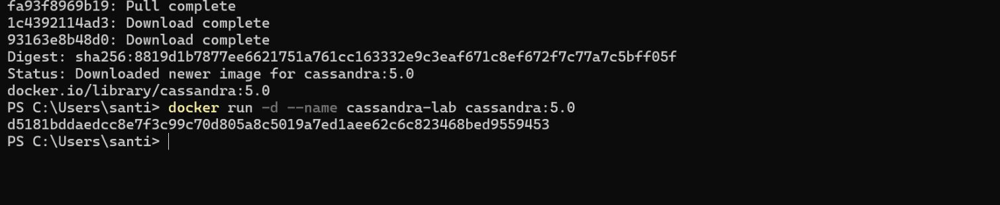
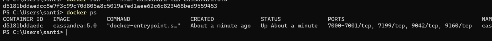
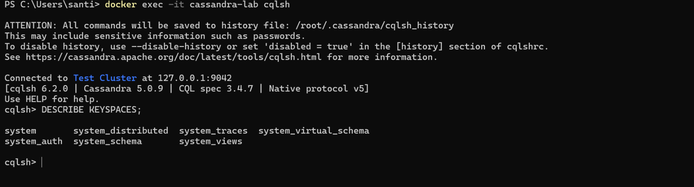
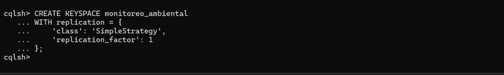
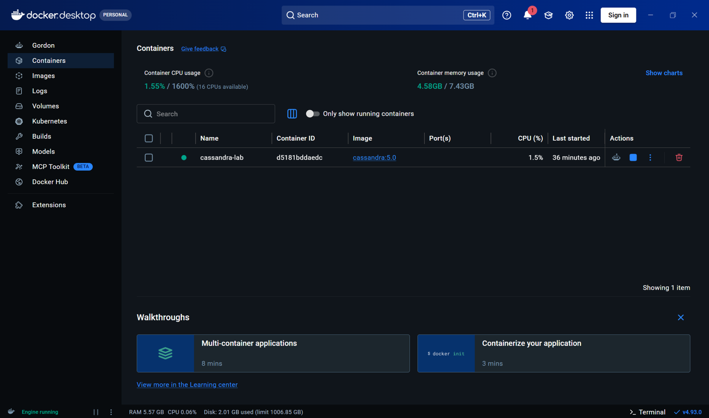

Instalación de Apache Cassandra en Windows con Docker
Manual paso a paso y primera conexión con CQL
1 Objetivo
Instalar y ejecutar Apache Cassandra en Windows mediante Docker Desktop, comprobar que el servicio funciona y realizar una primera prueba con el lenguaje CQL (Cassandra Query Language).
Este manual documenta el procedimiento utilizado en clase con Docker Desktop y la imagen cassandra:5.0. Las capturas muestran un ejemplo de instalación; algunos botones pueden cambiar de ubicación entre versiones.
2 Requisitos
- Windows 10 u 11 compatible con Docker Desktop.
- Virtualización habilitada y WSL 2 correctamente configurado.
- Al menos 8 GB de RAM como referencia práctica; disponer de más memoria facilita el trabajo simultáneo con otras aplicaciones.
- Conexión a Internet para descargar Docker y Cassandra.
Docker Desktop administra el contenedor. Dentro de ese contenedor se ejecuta Cassandra. Para crear tablas y consultar los datos utilizaremos cqlsh, la consola de Cassandra. No es necesario instalar Java de forma independiente para este procedimiento.
3 Descargar e iniciar Docker Desktop
Accede a la página oficial de instalación de Docker Desktop para Windows. Descarga la versión que corresponda al procesador de tu computadora y ejecuta el instalador.
Si el instalador solicita actualizar WSL o reiniciar Windows, completa esos pasos antes de continuar. Abre Docker Desktop desde el menú Inicio.
3.1 Aceptar los términos
En el primer inicio, Docker muestra el acuerdo de suscripción. Revisa los términos y selecciona Accept si estás de acuerdo.

3.2 Continuar sin iniciar sesión
En la pantalla de bienvenida puedes seleccionar Skip si no necesitas iniciar sesión para este ejercicio.

3.3 Verificar que Docker está funcionando
En la ventana principal, comprueba que en la parte inferior izquierda aparezca el indicador Engine running.

4 Descargar Apache Cassandra
Abre PowerShell desde el menú Inicio de Windows. Para comprobar que Docker está disponible, ejecuta:
docker --versionAhora descarga la imagen de Cassandra:
docker pull cassandra:5.0Espera hasta que aparezca el mensaje Downloaded newer image for cassandra:5.0 o un mensaje indicando que la imagen ya está actualizada.

5 Crear e iniciar el contenedor
Ejecuta el siguiente comando una sola vez para crear el contenedor de la práctica:
docker run -d --name cassandra-lab cassandra:5.0Docker devolverá un identificador largo. Eso indica que creó el contenedor; todavía debemos comprobar que Cassandra terminó de iniciar.

5.1 Comprobar el estado
Ejecuta:
docker psComprueba que aparezca cassandra-lab con un estado que comience por Up.

Aunque el estado sea Up, el primer arranque de Cassandra puede tardar varios minutos. Si el siguiente paso presenta un error de conexión, espera un poco y vuelve a intentarlo.
6 Entrar a la consola de Cassandra
En PowerShell, escribe:
docker exec -it cassandra-lab cqlshCuando aparezca el indicador cqlsh>, la conexión está lista. Para ver los espacios de claves disponibles, ejecuta:
DESCRIBE KEYSPACES;El resultado incluirá espacios internos como system, system_schema y system_auth.

7 Primera prueba: crear un keyspace
Un keyspace es el espacio lógico donde organizaremos nuestras tablas. Para este curso utilizaremos el ejemplo de sensores ambientales.
Escribe lo siguiente dentro de cqlsh, no en PowerShell:
CREATE KEYSPACE monitoreo_ambiental
WITH replication = {
'class': 'SimpleStrategy',
'replication_factor': 1
};Esta configuración se utiliza únicamente para nuestra práctica de un nodo. No es una configuración recomendada para producción.

Selecciona el keyspace:
USE monitoreo_ambiental;El indicador cambiará a cqlsh:monitoreo_ambiental>.
8 Comprobar que podemos guardar y consultar datos
Crea una tabla sencilla para identificar los sensores:
CREATE TABLE sensores (
sensor_id TEXT PRIMARY KEY,
edificio TEXT,
aula TEXT,
tipo TEXT
);Registra tres dispositivos:
INSERT INTO sensores (sensor_id, edificio, aula, tipo)
VALUES ('sensor_001', 'A', '101', 'Temperatura y humedad');
INSERT INTO sensores (sensor_id, edificio, aula, tipo)
VALUES ('sensor_002', 'A', 'Laboratorio', 'Temperatura y humedad');
INSERT INTO sensores (sensor_id, edificio, aula, tipo)
VALUES ('sensor_003', 'B', 'Exterior', 'Temperatura');Comprueba los resultados:
SELECT * FROM sensores;Deberían aparecer tres filas. El orden puede variar, ya que Cassandra no garantiza el orden de presentación sin una consulta diseñada para ello.
Esta tabla almacena información general sobre cada sensor. En una práctica posterior crearemos una tabla distinta para guardar múltiples mediciones de temperatura y humedad a lo largo del tiempo y estudiaremos las claves de partición y las columnas de agrupamiento.
9 Administrar Cassandra desde Docker Desktop
En Docker Desktop, entra en Containers. Ahí encontrarás cassandra-lab con un punto verde cuando esté funcionando. La interfaz permite revisar el contenedor y detenerlo sin eliminarlo.

Docker Desktop no es equivalente a MongoDB Compass: Docker administra el contenedor, mientras que las consultas a Cassandra las realizamos aquí mediante cqlsh.
10 Detener Cassandra y volver a utilizarlo
Cuando termines de trabajar, sal de cqlsh:
exitDesde PowerShell, detén el contenedor:
docker stop cassandra-labCuando quieras trabajar otro día, primero abre Docker Desktop. Después ejecuta:
docker start cassandra-labEspera a que Cassandra termine de iniciar y vuelve a abrir la consola:
docker exec -it cassandra-lab cqlshSi vas a trabajar con las tablas anteriores, selecciona el keyspace:
USE monitoreo_ambiental;Detener (stop) y volver a iniciar (start) el mismo contenedor conserva sus datos. En cambio, si lo eliminas, podrías perder los datos almacenados dentro de él. Para prácticas que necesiten sobrevivir incluso a la eliminación del contenedor, posteriormente configuraremos un volumen persistente.
11 Problemas frecuentes
| Situación | Qué revisar |
|---|---|
docker no se reconoce |
Verifica que Docker Desktop esté instalado y vuelve a abrir PowerShell. |
| El motor de Docker no funciona | Abre Docker Desktop y espera a que aparezca Engine running. |
cqlsh no puede conectarse |
Cassandra puede seguir arrancando; espera unos minutos y vuelve a intentarlo. |
El nombre cassandra-lab ya existe |
No repitas docker run; utiliza docker start cassandra-lab si el contenedor está detenido. |
docker ps no muestra el contenedor |
Ejecuta docker ps -a para revisar si está detenido. |
12 Resultado esperado
Al finalizar este manual debes poder iniciar y detener Cassandra, ingresar a cqlsh, crear un keyspace y una tabla, insertar registros y consultarlos desde PowerShell.